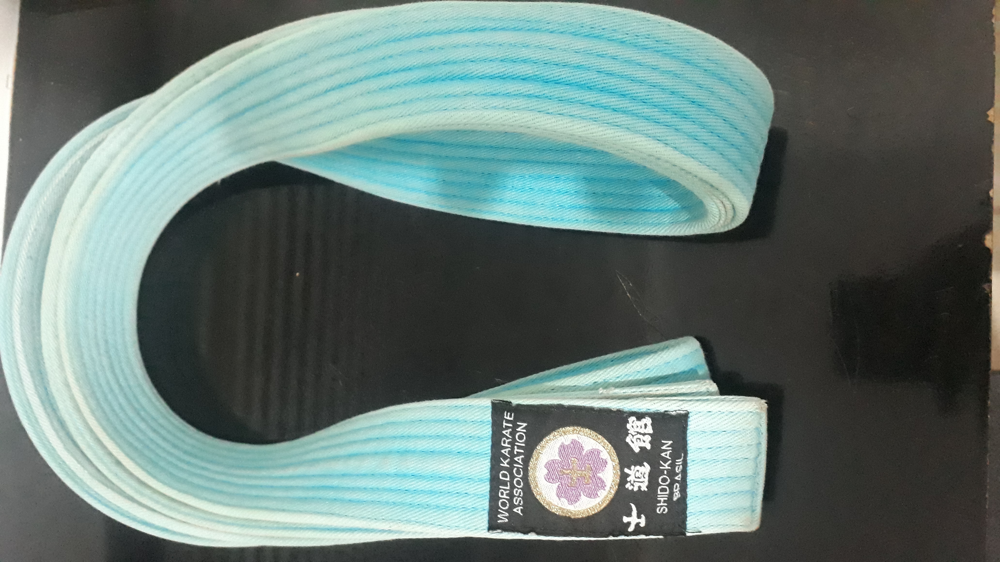
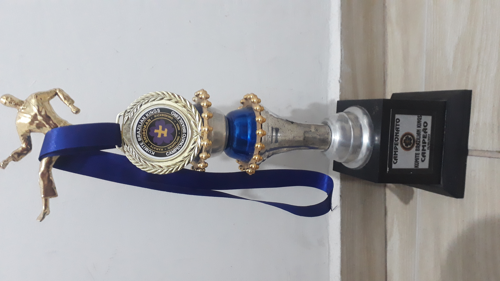
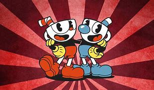

Minha melhor lembrança aconteceu há alguns anos, eu tinha 14 anos, foi meu primeiro ano treinando karate. No primeiro semestre eu dei meus primeiros passos
e conquistei a faixa azul depois de um árduo exame de graduação!

No final do ano participei do meu primeiro campeonato, e para ser uma boa lembrança o resultado não podia ser diferente, ganhei o campeonato!

Viajar todo o mundo ou ler todos os livros?
Viajar quase todo o mundo, há lugares que eu não iria, mas tem países que eu adoraria visitar como por exemplo:
Grecia
Quem é a pessoa que te conhece melhor? Essa é a mesma pessoa que você conhece melhor?
A pessoa a qual eu melhor conheço é meu amigo, Molinari, e o contrário também, confiamos um no outro para qualquer coisa, desde acontecimentos pessoais até uma escolha de um personagem em algum jogo.

Um dia mágico está chegando e nesse dia você poderá ter três horas a mais nesse dia. Você pode escolher o dia. Que dia você escolheria e o que faria com esse dia?
Se você pudesse fazer as outras pessoas acreditarem em algo que você acredita, o que seria?
Eu acredito e gosto da palavra Integridade, então indicaria que as pessoas seguissem seu significado.
Significado de Integridade:
Condição de inteiro, do que não foi alvo de diminuição; inteireza.
Característica do que não sofreu alteração, do que não foi quebrado nem atingido; ileso: integridade física ou mental.
Você prefere receber elogios pelas suas realizações ou pelo seu caráter? Por quê?
Por ambos, vou fazer com que minhas realizações andem junto com meu caráter, sempre aprimorando os dois.